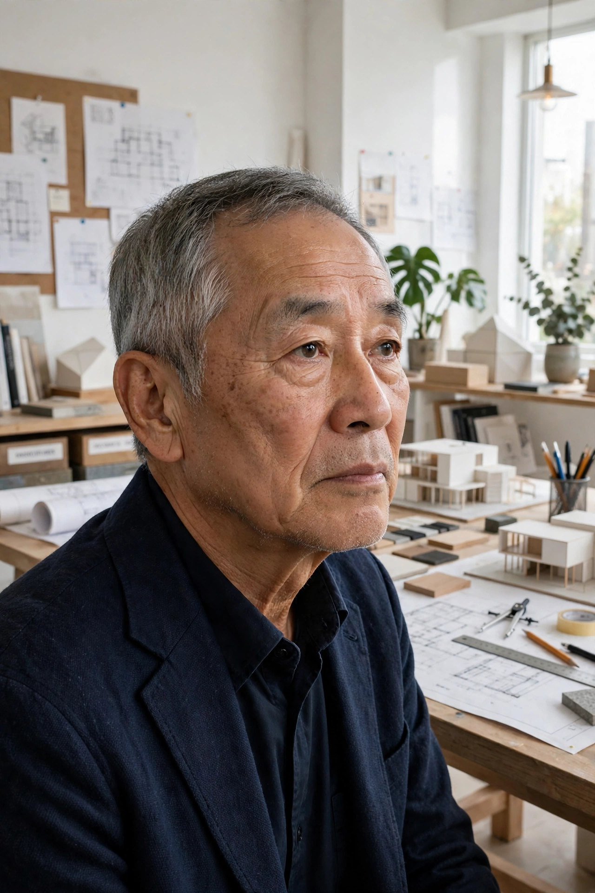

| Shigeru Ban | |
|---|---|
 | |
| Born | 5 August 1957, Tokyo, Japan |
| Nationality | Japanese |
| Alma mater | Southern California Institute of Architecture; Cooper Union |
| Occupation | Architect |
| Awards | Pritzker Architecture Prize (2014) |
Shigeru Ban (坂 茂, Ban Shigeru; born 5 August 1957) is a Japanese architect known for his innovative work with paper, particularly recycled cardboard tubes used to build quickly and efficiently deployable shelters for disaster victims. He was named the winner of the Pritzker Architecture Prize in 2014, with the jury praising his creative approach to materials and his dedication to humanitarian causes.
Ban was born in Tokyo. His father was a businessman with Toyota and his mother a haute couture designer. He studied at the Southern California Institute of Architecture (SCI-Arc) and later at the Cooper Union School of Architecture in New York, where he studied under John Hejduk and graduated in 1984. The influence of Hejduk's experimental "nine-square grid" problem can be seen in Ban's early work.
Ban founded his own practice, Shigeru Ban Architects, in Tokyo in 1985. He gained international attention for his use of unconventional materials, above all paper tubes, which he first explored in exhibition designs and then applied to emergency housing. After the Great Hanshin earthquake struck Kobe in 1995, he designed the "Paper Log House" for displaced residents and a Paper Church built from paper tubes. He founded the Voluntary Architects' Network (VAN), an NGO devoted to disaster relief architecture.
His disaster-relief shelters have since been deployed after earthquakes, tsunamis and conflicts in Rwanda, Turkey, India, China, Haiti, Italy, New Zealand, the Philippines and Ukraine. In Christchurch, New Zealand, his Cardboard Cathedral (2013) served as a transitional replacement for the earthquake-damaged ChristChurch Cathedral.
Balkrishna Doshi · Riken Yamamoto · Pritzker Architecture Prize